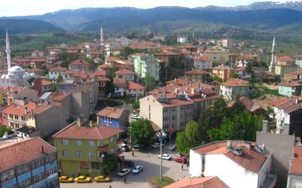

Sumbas İlçesi

Tarihi
Kadirli ile Kozan arasında bulunan ve eski Kars-ı Zülkadiriye Coğrafyası içerisinde yer alan “Sumbas Bölgesi” yalnız Kadirli ve Kozan değil tüm Kilikya tarihinde çok önemli bir yer tutmaktadır. Zira Kapadokya Kilikya geçidinin yukarı ovadaki ilk duraklarından biri olan Sumbas tarih boyunca Kilikyanın en hareketli yerlerinden biri olmuştur.Bir çok Hükümdarın,Kumandanın ve Beyin konakladığı,kavga tuttuğu Sumbas tarihi bakımından Anadolu tarihiyle eşleşmekte,Anadolu’da bulunan nice uygarlık izlerini bağrında taşımaktadır. Sıtır ve Çem (Kalayvannos) kaleleri; Cennetler ve diğer harabeler,höyükler,mağaralar,mağara mezarlar,kesteliler (tek kişilik mezarlar), şişeler,cereler ve cam kırıkları bu tarihi zenginliğin en belirgin kalıntılarıdır. Hititler M.Ö. 1750 yıllarında Kayseri üzerinden Kilikya’ya indiler.Hitit Kralı Tuthalis Sis,Anavarza ve Sumbas’ı kendi topraklarına katarak doğuya yöneldi. M.Ö. 1750’den 1190’a kadar Hitit hakimiyetinde kalan Sumbas zaman zaman Kilikya ve çevresinde kurulmuş olan Kızvatna,Kue ve Donunalar gibi Devletçiklerin de hakimiyetinde kaldı.M.Ö.860 yıllarında Kilikya’ya Asurlular hakim oldu. M.Ö. 612 yılında Anavarza’yı kendilerine başkent yapan Kilikyalılar Sis’ten Kapodokya’ya,Sumbas’tan Karatepe’ye kadar uzanan alanı 200 yılı aşkın süre ellerinde tuttular. M.Ö. 401 yıllarına doğru İran’lılar (Persli’ler) Kilikya Krallığını kendilerine bağladılar. M.Ö. 333’te Payas dolaylarında İskender’e yenilerek Kilikyayı terk ettiler . M.Ö. 100 yıllarına doğru Romalılar Kilikya’ya girdiler ve varlıklarını hissettirmeye başladılar. Ancak tam hakimiyetleri M.S. 375’lerde sağlanmıştır. 67 Yılında Flavyapolis (Kadirli) şehrini kuran Romalılar Sumbas’ın gelişmesi için gereken yatırımları yaptılar. Eski Sumbas Camiinin yerinde ve çevresinde yoğunlaşan bu yatırımlar idari,askeri binalar,manastır,konaklama yeri ve barınaklardan oluşmaktaydı. 636’larda başlayan İslam akınları karşısında dayanamayan Romalılar 758’lere doğru Kilikyayı Abbasilere bırakmak zorunda kaldılar. Abbasiler 750 yıllarında meydana gelen zelzelenin Sumbas’ta yaptığı tüm yıkıntıları tamir ederek Horasan’dan getirdikleri çiftçi ve mücahit Türkleri Çukurova’ya yerleştirdiler. Yöremizin ve İlçemizin adı olan Sumbas ismi Horasanlı Türklerden kalmıştır. Zira Sumbas bir Horasan nehri olan ve Hazar’a dökülen Atrek nehrinin en büyük koludur. Yöremizde 200 yıldan fazla kalan Horasanlı Türkler 969 yılında Bizans Hükümdarı Nikoforos’un Kayseri üzerinden Sumbas ve Anavarza’ya inmesi ile Sumbas ve çevresini terk etmişlerdir. Anadolu Selçuklu Devletini kuran Kutalmış oğlu Süleyman Bey 1082’de Sumbas ve çevresini topraklarına kattı. 1100 yıllarına doğru Danişmentliler (Yağı- basanlar) bölgenin hakimi oldular. Anadolu Selçuklu Devletini kuran Kutalmış oğlu Süleyman Bey 1082’de Sumbas ve çevresini topraklarına kattı.1100 yıllarına doğru Danişmentliler (Yağı- basanlar) bölgenin hakimi oldular. 1178 yılında Danişmentlileri ortadan kaldıran Selçuklular Sumbas ve çevresine ikinci defa hakim oldular. Bu hakimiyetleri Kösedağ Savaşına (1243) kadar devam etti. Selçukluların Kilikyada hakimiyetlerini kaybetmeleri üzerine burada bulunan Türk ve Müslüman unsuru koruma görevi Memluklulara düştü. Dulkadirli Karaca Bey 1350 yıllarında Kadirli ve Sumbas topraklarını kendi ülkesine katmıştır. Tüm Dulkadirli elinde olduğu gibi; Kars ve Sumbas’da da Dulkadirli hakimiyeti 1350’den 1522’ye kadar devam etmiştir. 1522’de Osmanlılar Dulkadirli Beyliğini ortadan kaldırdılar. Kars-ı Zülkadiriye toprakları zamanla Sumbas ve Karamanlı olmak üzere iki bölgeye ayrılmıştır. Aralarında Savrun çayının sınır olduğu bu iki bölgeden Karamanlı’yı önce Latifoğulları sonra da Kerimoğulları yönetti. Sumbas bölgesini ise Gökvelioğulları kendilerine merkez yaparak idare ettiler. İki merkezden yönetilen Kars-ı Zülkadiriye 1865 Fırka-i Islahiye hareketi ile yeniden tek merkezden idare edilmeye başlandı. Dulkadirliler ve Osmanlılar döneminde Savrun, Mekelkin, Hacın, Mağara nahiyelerine merkezlik yapan tarihi Sumbas Nahiyesi Cumhuriyet döneminde iki köylük bir yer durumuna gelmiştir. Kızılömerli, Çaygeçit , Küçükçınar, Hamoğlu (Yazıboyu) köylerinde yaşayan halk eski Karaömerli köyünden ayrılarak şimdiki yerlerine göç etmişler ve ayrı muhtarlık kurmuşlardır. Halk dağılınca Karaömerli ve Araplı köyleri (Şimdiki Sumbas) eski hareketliliğini kaybetmiş Kadirli İlçe merkezi gelişmiştir. Cumhuriyet döneminde Kadirli İlçesine bağlı iki köy olarak varlıklarını sürdürmüşlerdir. 1992 yılında bu iki köy birleşerek Belediye teşkilatı kurdular. Belediyeye isim olarak tarihi SUMBAS ismini verdiler.24.10.1996 yılında 4200 Sayılı Kanunla Osmaniye’nin İl olmasıyla birlikte Sumbas İlçe statüsüne kavuştu.
Turizm Değerleri :
İlçe merkezinde koruma altına alınmış ve restorasyonu tamamlanmış Sumbas eski camii bulunmaktadır. İlçeye bağlı Mehmetli beldesinde Mehmetli Barajı ( Kesiksuyu Barajı ) olup bu baraj çevresinde Alabalık tesisleri bulunmaktadır. Ayrıca Akçataş köyü Sumbas Çayı’nın çıktığı yer içerisinde Alabalık üretim tesisi olup halka hizmet vermektedir. İlçeye uzaklığı 15 km dir. Tarihi yerleri : Sumbas eski camii, Cem Kalesi Armağanlı köyündedir. Sumbas’a uzaklığı 5 km dir. Diniker Kalesi Akdam köyündedir. Sumbas’a uzaklığı 5 km dir. Yaylaları Bağdaş yaylası ve Yirce yaylasıdır.
Sayfa Geri Dön